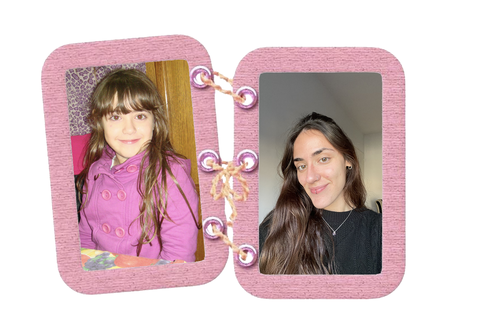

Soy Pili, tengo 21 años y estudio Diseño Multimedial. Desde muy chica supe que lo mío iba a ser crear: iba a todos lados con mi valijita de marcadores, dibujando y buscando formas de expresar ideas.
Hoy sigo ese mismo camino, pero en el mundo digital. Me interesa todo lo que cruza lo visual con la tecnología, diseñando experiencias que no solo se vean bien, sino que también funcionen. Disfruto trabajar con estéticas limpias, modernas y con intención, cuidando cada detalle.
Siempre estoy explorando nuevas herramientas y buscando proyectos que me permitan crecer y expresarme.
 ▶ Ver en YouTube
▶ Ver en YouTube
Proyecto realizado en el marco de la materia Diseño y Producción Audiovisual, en el que desarrollamos un videoclip a partir de una canción elegida libremente. Junto a mi grupo decidimos trabajar con "Alright" de Supergrass, tomando como punto de partida la idea de retratar un día entre amigos desde una mirada espontánea y cercana.
A lo largo del proceso participamos en la conceptualización, la planificación y el rodaje, buscando construir una narrativa visual simple pero significativa, basada en momentos reales y cotidianos. La propuesta estética se centró en lo orgánico y lo natural, evitando una puesta demasiado estructurada y priorizando la frescura de las situaciones.
Para lograrlo, combinamos tomas realizadas con cámara profesional con otras registradas desde el celular utilizando lente ojo de pez, lo que permitió generar variedad visual y aportar dinamismo al relato.
El resultado final es un videoclip que transmite una sensación de diversión, cercanía y libertad, manteniendo coherencia estética y narrativa a lo largo de toda la pieza. Fue una experiencia de trabajo muy enriquecedora, en la que logramos materializar una idea simple en un producto audiovisual sólido.


Proyecto realizado en el marco del desarrollo de la aplicación WORN, una propuesta pensada como red social para el intercambio de ropa dentro del concepto de moda circular. A partir de esta idea, trabajamos en la construcción de una experiencia de usuario clara e intuitiva, buscando resolver la interacción entre usuarios de manera simple y funcional.
El proyecto se desarrolló de manera grupal, atravesando un proceso que comenzó de forma más exploratoria y que, a medida que avanzábamos, nos permitió involucrarnos cada vez más en las decisiones de diseño.
A lo largo del desarrollo se trabajó en la investigación, la organización de la información y la definición de estructuras, que luego se materializaron en wireframes y prototipos interactivos. Desde lo visual, se priorizó una estética limpia y contemporánea.
El resultado final es una propuesta que integra diseño y funcionalidad, reflejando un enfoque centrado en el usuario y en la construcción de experiencias digitales completas.


Proyecto realizado en el marco de la materia Lenguaje Visual durante el primer año de la carrera, centrado en la construcción de un póster a partir de una consigna de abstracción formal. La propuesta consistía en representar una banda musical elegida utilizando exclusivamente figuras geométricas básicas como círculos, triángulos y cuadrados.
A lo largo del desarrollo se exploró la síntesis visual como recurso principal, trabajando la composición, el equilibrio y la jerarquía de elementos dentro del plano.
El resultado final propone un póster que comunica la esencia del proyecto mediante la reducción formal, destacando la capacidad de la geometría para construir significado e identidad visual.


Este proyecto consiste en una serie de publicaciones para Instagram desarrolladas a partir de un registro fotográfico personal de vacaciones, intervenido con una intención estética y conceptual. La propuesta se enfoca en construir una narrativa visual coherente a lo largo del carrusel, trabajando la selección de imágenes, el ritmo y la composición como elementos principales.
La intervención sobre las fotografías busca unificar la serie desde lo visual, aportando identidad y reforzando una estética definida. El proyecto toma como referencia lógicas propias del diseño editorial y la dirección de arte, trasladadas al formato digital de redes sociales.
El resultado es una pieza que transforma un registro cotidiano en una propuesta visual pensada, donde cada imagen forma parte de un conjunto con intención y coherencia.


 ▶ Ver en YouTube
▶ Ver en YouTube
Proyecto realizado en el marco de la materia Práctica Profesionalizante en Diseño y Producción Audiovisual, centrado en la realización de un cortometraje a partir de una propuesta narrativa original. La historia sigue a Sol, quien transita su cumpleaños en soledad mientras espera la llegada de su pareja, construyendo un clima de tensión que evoluciona hacia un desenlace inesperado.
A lo largo del desarrollo se trabajó en la construcción de una atmósfera íntima y progresivamente inquietante, utilizando elementos cotidianos y recursos visuales para sugerir el estado emocional del personaje.
El proyecto se desarrolló de manera grupal. En este contexto, participé como productora, formando parte de la organización y coordinación del proyecto.